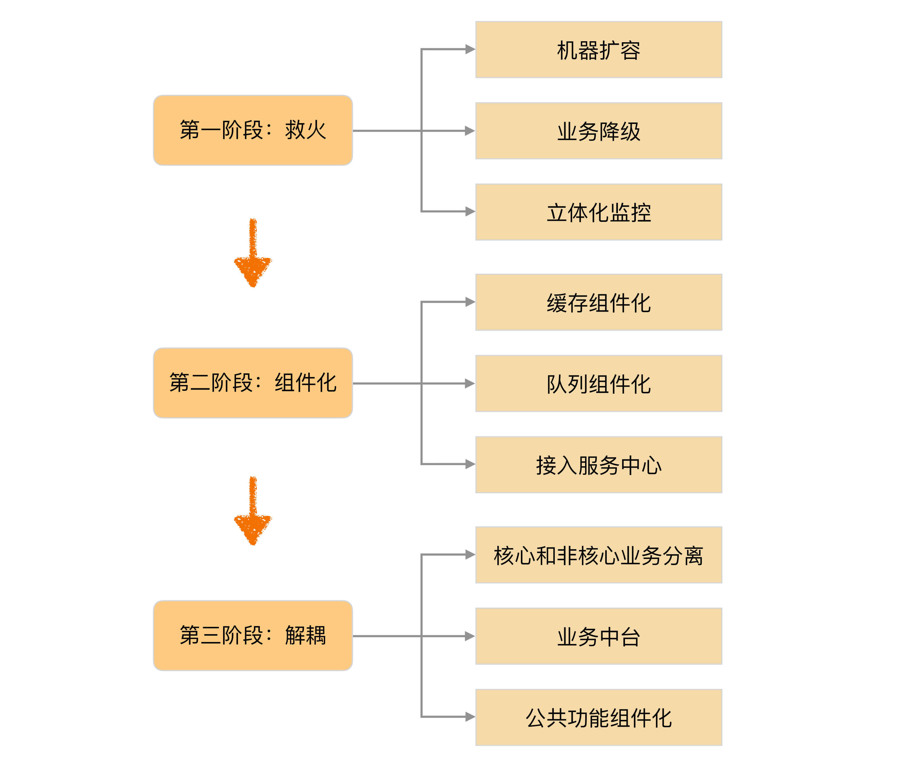

- 00 开篇词 照着做，你也能成为架构师！.md
- 01 架构到底是指什么？.md
- 02 架构设计的历史背景.md
- 03 架构设计的目的.md
- 04 复杂度来源：高性能.md
- 05 复杂度来源：高可用.md
- 06 复杂度来源：可扩展性.md
- 07 复杂度来源：低成本、安全、规模.md
- 08 架构设计三原则.md
- 09 架构设计原则案例.md
- 10 架构设计流程：识别复杂度.md
- 11 架构设计流程：设计备选方案.md
- 12 架构设计流程：评估和选择备选方案.md
- 13 架构设计流程：详细方案设计.md
- 14 高性能数据库集群：读写分离.md
- 15 高性能数据库集群：分库分表.md
- 16 高性能NoSQL.md
- 17 高性能缓存架构.md
- 18 单服务器高性能模式：PPC与TPC.md
- 19 单服务器高性能模式：Reactor与Proactor.md
- 20 高性能负载均衡：分类及架构.md
- 21 高性能负载均衡：算法.md
- 22 想成为架构师，你必须知道CAP理论.md
- 23 想成为架构师，你必须掌握的CAP细节.md
- 24 FMEA方法，排除架构可用性隐患的利器.md
- 25 高可用存储架构：双机架构.md
- 26 高可用存储架构：集群和分区.md
- 27 如何设计计算高可用架构？.md
- 28 业务高可用的保障：异地多活架构.md
- 29 异地多活设计4大技巧.md
- 30 异地多活设计4步走.md
- 31 如何应对接口级的故障？.md
- 32 可扩展架构的基本思想和模式.md
- 33 传统的可扩展架构模式：分层架构和SOA.md
- 34 深入理解微服务架构：银弹 or 焦油坑？.md
- 35 微服务架构最佳实践 - 方法篇.md
- 36 微服务架构最佳实践 - 基础设施篇.md
- 37 微内核架构详解.md
- 38 架构师应该如何判断技术演进的方向？.md
- 39 互联网技术演进的模式.md
- 40 互联网架构模板：存储层技术.md
- 41 互联网架构模板：开发层和服务层技术.md
- 42 互联网架构模板：网络层技术.md
- 43 互联网架构模板：用户层和业务层技术.md
- 44 互联网架构模板：平台技术.md
- 45 架构重构内功心法第一式：有的放矢.md
- 46 架构重构内功心法第二式：合纵连横.md
- 47 架构重构内功心法第三式：运筹帷幄.md
- 48 再谈开源项目：如何选择、使用以及二次开发？.md
- 49 谈谈App架构的演进.md
- 50 架构实战：架构设计文档模板.md
- 51 如何画出优秀的软件系统架构图？.md
- 加餐｜业务架构实战营开营了.md
- 加餐｜单服务器高性能模式性能对比.md
- 加餐｜扒一扒中台皇帝的外衣.md
- 如何高效地学习开源项目 华仔，放学别走！ 第3期.md
- 新书首发 《从零开始学架构》.md
- 架构专栏特别放送 华仔，放学别走！ 第2期.md
- 架构专栏特别放送 华仔，放学别走！第1期.md
- 架构师必读书单 华仔，放学别走！ 第5期.md
- 架构师成长之路 华仔，放学别走！ 第4期.md
- 结束语 坚持，成就你的技术梦想.md
47 架构重构内功心法第三式：运筹帷幄
在前面的架构重构内功心法“[有的放矢]”和“[合纵连横]”中，我提到架构师需要从一大堆问题中识别关键的复杂度问题，然后有的放矢地通过架构重构来解决。但是通常情况下，需要架构重构的系统，基本上都是因为各种历史原因和历史问题没有及时处理，遗留下来逐渐积累，然后到了一个临界点，各种问题开始互相作用，集中爆发！到了真正要开始重构的时候，架构师识别出系统关键的复杂度问题后，如果只针对这个复杂度问题进行架构重构，可能会发现还是无法落地，因为很多条件不具备或者有的问题没解决的情况下就是不能做架构重构。因此，架构师在识别系统关键的复杂度问题后，还需要识别为了解决这个问题，需要做哪些准备事项，或者还要先解决哪些问题。这就需要我今天要和你分享的架构重构内功心法第三式：运筹帷幄。
经过分析和思考，我们可能从最初的100个问题列表，挑选出其中50个是需要在架构重构中解决的，其中一些是基础能力建设或者准备工作，而另外一些就是架构重构的核心工作。有了这样一个表格后，那我们应该怎么去把这50个问题最终解决呢？
最简单的做法是每次从中挑一个解决，最终总会把所有的问题都解决。这种做法操作起来比较简单，但效果会很差，为什么呢？
第一个原因是没有区分问题的优先级，所有问题都一视同仁，没有集中有限资源去解决最重要或者最关键的问题，导致最后做了大半年，回头一看好像做了很多事情，但没取得什么阶段性的成果。
第二个原因是没有将问题分类，导致相似问题没有统筹考虑，方案可能出现反复，效率不高。
第三个原因是会迫于业务版本的压力，专门挑容易做的实施，到了稍微难一点的问题的时候，就因为复杂度和投入等原因被搁置，达不到重构的真正目的。
以X系统为例，在我加入前，其实也整理了系统目前存在的问题，大的项包括可用性、性能、安全、用户体验等，每个大项又包括十几二十个子项。但是实施时基本上就是挑软柿子捏，觉得哪个好落地、占用资源不太多，就挑来做，结果做了半年，好像做了很多功能，但整体却没什么进展。
后来我们成立了一个“X项目”，在原来整理的问题基础上，识别出架构的核心复杂度体现在庞大的系统集成了太多功能，可扩展性不足；但目前系统的可用性也不高，经常出线上问题，耗费大量的人力去处理。因此我们又识别出如果要做架构重构，就需要系统处于一个比较稳定的状态，不要经常出线上问题。而目前系统的可用性性不高，有的是因为硬件资源不够用了，或者某些系统组件使用不合理，有的是因为架构上存在问题。
基于这些分析，我们制定了总体的策略，如下图所示：

可以看到，真正的架构重构在第三阶段，第一阶段和第二阶段都是为了第三阶段做准备而已，但如果没有第一阶段和第二阶段的铺垫，直接开始第三阶段的架构重构工作，架构重构方案需要糅合第一阶段和第二阶段的一些事项（例如，业务降级、接入服务中心等），会导致架构重构方案不聚焦，而且异常复杂。
为什么最终采用这样一个策略呢？主要还是为了集中有限的资源，某个阶段集中解决某一类问题。这样做首先是效率高，因为阶段目标比较明确，做决策和方案的时候无须进行太多选择；其次是每个阶段都能看到明显的成果，给团队很大的信心。比如说第一阶段的“救火”，做完之后，系统很少有因为机器过载、缓存响应慢、虚拟机挂死等问题导致的故障了；完成第二阶段的事项后，因为组件、外部系统故障导致系统故障的问题也很少了。完成前两个阶段后，我们就可以安心地做第三阶段的“服务化”工作了。
S系统的重构做法也是类似，但S系统当时面临的主要问题就是可用性不高，并没有系统耦合的问题，所以我们当时的策略是“先救火、后优化、再重构”。“救火”阶段做了扩容（防止资源不足导致系统被压死）和Nginx一键切换功能（故障时快速切换）；优化阶段将一些明显的可用性问题解决（包括性能问题等）；重构阶段将原来的单点数据库改为多中心。
总结一下重构的做法，其实就是“分段实施”，将要解决的问题根据优先级、重要性、实施难度等划分为不同的阶段，每个阶段聚焦于一个整体的目标，集中精力和资源解决一类问题。这样做有几个好处：
- 每个阶段都有明确目标，做完之后效果明显，团队信心足，后续推进更加容易。
- 每个阶段的工作量不会太大，可以和业务并行。
- 每个阶段的改动不会太大，降低了总体风险。
具体如何制定“分段实施”的策略呢？分享一下我的经验。
1.优先级排序
将明显且又比较紧急的事项优先落地，解决目前遇到的主要问题。例如，扩容在S系统和X系统中都是最优先实施的，因为如果不扩容，系统隔三差五一会出现响应超时报警，一会来个过载报警，一会来个大面积不可用……这些问题耗费大量的人力和精力，也就没法做其他事情了。
2.问题分类
将问题按照性质分类，每个阶段集中解决一类问题。例如，X系统的第二阶段，我们将多个底层系统切换到公司统一的公共组件，提升整体可用性。
3.先易后难
这点与很多人的直觉不太一样，有的人认为应该先攻克最难的问题，所谓“擒贼先擒王”，解决最难的问题后其他问题就不在话下。这样看起来很美好，但实际上不可行。
首先，一开始就做最难的部分，会发现想要解决这个最难的问题，要先解决其他容易的问题。
其次，最难的问题解决起来耗时都比较长，占用资源比较多，如果一开始做最难的，可能做了一两个月还没有什么进展和成果，会影响相关人员对项目的评价和看法，也可能影响团队士气。
第三，刚开始的分析并不一定全面，所以一开始对最难的或者最关键的事项的判断可能会出错。
采取“先易后难”的策略，能够很大程度上避免“先难后易”策略的问题。
首先，随着项目的推进，一些相对简单的问题逐渐解决，会发现原来看起来很难的问题已经不那么难了，甚至有的问题可能都消失了。
其次，先易后难能够比较快地看到成果，虽然成果可能不大，但至少能看到一些成效了，对后续的项目推进和提升团队士气有很大好处。
第三，随着项目的进行，原来遗漏的一些点，或者分析和判断错误的点，会逐渐显示出来，及时根据实际情况进行调整，能够有效地保证整个重构的效果。
4.循序渐进
按照前3个步骤划分了架构重构的实施阶段后，就需要评估每个阶段所需要耗费的时间，很可能会出现有的阶段耗时可能只要1个月，而有的却需要6个月，虽然这可能确实是客观事实，但通常情况下，按照固定的步骤和节奏，更有利于项目推进。我的经验是每个阶段最少1个月，最长不要超过3个月，如果评估超过3个月的，那就再拆分为更多阶段。就像X项目，我们先划分了阶段，每个阶段又分了任务子集，当任务子集比较小的时候，多个任务子集可以并行；当任务子集比较大的时候，就当成一个独立的里程碑推进。
小结
今天我为你讲了架构重构中分阶段有序推进的技巧，希望对你有所帮助。
这就是今天的全部内容，留一道思考题给你吧，如果一个架构重构项目最后规划要2年才完成，你会怎么处理？
© 2019 - 2023 Liangliang Lee. Powered by gin and hexo-theme-book.